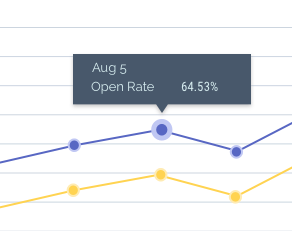
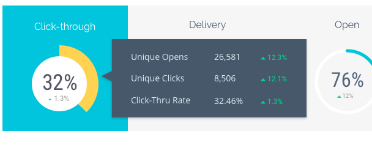
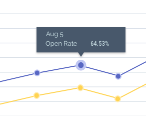
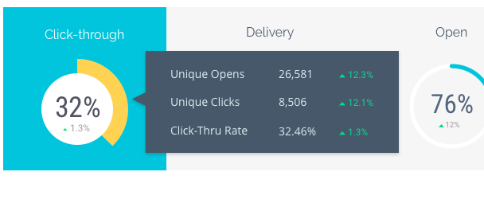

Email Marketing Dashboard
The Email Marketing dashboard enables email marketers to gain powerful insights from both real-time and historical data. This project is inspired by a project I've worked on at Marketo. I led the design for a pilot project at Marketo to re-imagine the next generation of Marketo Analytics. Finally we transitioned this project to a different team because of scope and a lack of resources.
The Problem
Email marketers need to track of dozens of metrics: opens, clicks, click-through rate etc. Most of the current Marketing Automation software represents such metrics in a data grid. It is nearly impossible for marketers to distill insight from the sea of numbers. Some power users and enterprise companies will tap into the powerful Business Intelligence (BI) tools to further analyze these data, but for most marketers, it is not necessary and difficult.
The Solution
I decided to build a graphical dashboard that will provide the majority of the information a marketer needs without over complicating the exploration process. It will not be as powerful as a BI tool, but it should be significantly more effective to understand email performance data than tabular data.
The Goal
- Design an Email Marketing Dashboard for email marketers to better understand their email performance data.
- Intuitive to understand and use. Marketers are empowered to gain a deeper understanding of their data without becoming experts in data science.
- Easy and fast filtering, so marketers can easily report on the emails they care about. Even if it's for Enterprise-grade companies.
The Deliverables
Persona Documents, Sketches, Mid-fi Wireframes, Style Tiles, Hi-fi Design Mockups.
Final Design
Process
Design Guideline - Shneiderman's Mantra
I have the pleasure to work with Dr. Ben Shneiderman during my graduate studies on a handful of information visualization projects. His mantra became my go-to guideline for any visualization/dashboard projects.
- Overview first: When marketers landed into the dashboard, they should get an overview of their email performance. The data presented on the dashboard should be enough to answer the question “how am I doing?” immediately.
- Zoom and filter: After the initial bird-eye view of the data, patterns, outlier and additional questions might emerge. The dashboard should have enough functions for users to dig into the data and find out more.
- details on demand: Marketers should be able to get the details on all things visualized in the dashboard. In the some cases, marketers may want to see the actual data, the dashboard should be able to support that.
Persona
I interviewed eight digital email marketers on their reporting needs and developed the following two personas. Naomi is the primary persona, and Amanda is the secondary persona.
Dashboard Content
From my previous interviews, I got a really good idea on what content that email marketers would like to see in such a dashboard. These data can be categorized as:
- Key email performance metrics
- Performance metrics: open rate, click through rate, unsubscribes etc.
- Delivery metrics: soft bounces, hard bounces, delivery rate etc.
- Break down of performance/delivery metrics overtime.
- Performance for a certain type of emails
- A different grouping of data, such as group by region/country
Ideation
I started by sketching different versions of the overall layout based on the content. I decided on a layout that consists of two views, one is the overview, one is the data view.
I then drilled down to each section of the design, determining the chart types that will best represent the data.
Wireframe
I then turned the wireframe into sketches, making many iterations and tweaking the content and interactions.
Style Exploration
I decided to create a few Style Tiles to play with different themes for the dashboard. I ended up with Vibrant for a more exciting visual design.
Final Design
Design Details
Most Important to Least Important
Many software dashboards are just a series of charts in no particular order. But I wanted to try to find a logical way to organize the data in the dashboard.
- The most important items are the key performance metrics, and they are at the top of the page. So a marketer can simply glance at the row and immediately know "how are my emails doing?". From left to right, the most important metrics for the email marketers is click-through rate, it is displayed the first, with different styling elements.
- The time series chart is slightly less important, but still important enough to be fit on the summary page.
- To the right of the time series chart, I assigned the top performing emails to the right of the time series chart. Top performing emails list is a "nice to have", and it's mainly for the secondary persona (Amanda, VP of Marketing) and thus the least important item on the summary page and it's placed in the lower-right corner.
- For the rare cases that marketers need to dig into the data, the original data grid of all metrics are contained in a second view (Details tab).
The small things
- It's easy to just show a number on the dashboard, such as click-through rate is 32%. But is this number good or bad? In the dashboard design, I added a benchmark comparison to show if the performance is better or worse than the comparison period they've selected. By default, the benchmark is set to be the previous period.
- To make data easy to scan, I've rounded all numbers for display. For example, the click through rate is 32.64%, but I only show 32% in the circular bar chart. The exact number is revealed in the tooltips.
 


